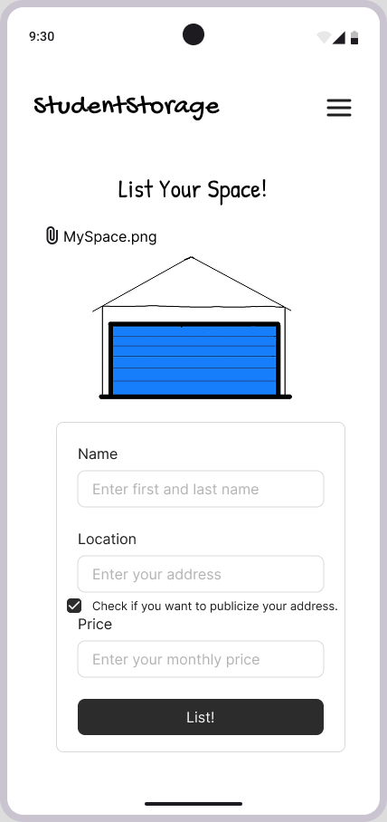
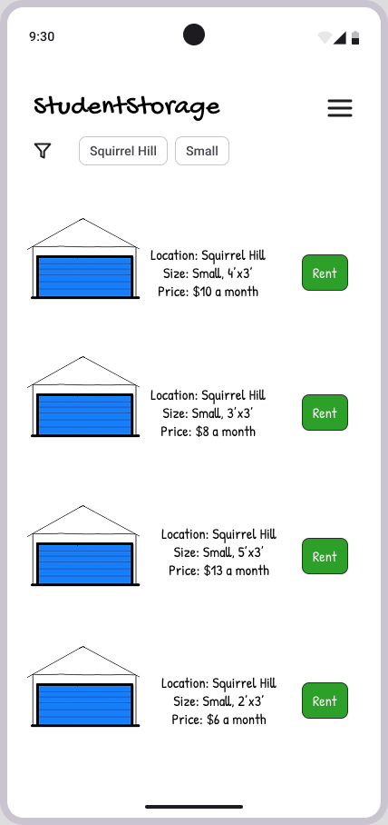
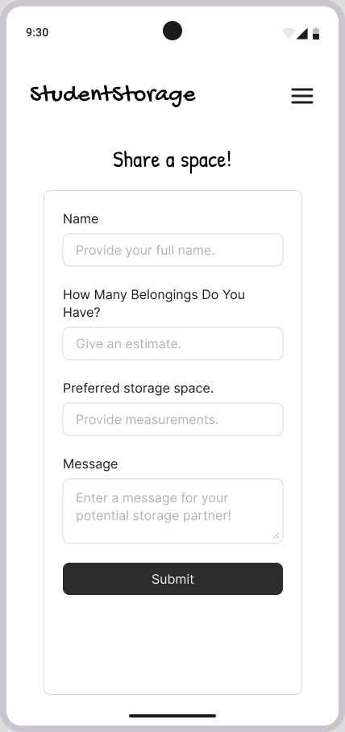

How it Works
StudentStorage is designed to work for everyone. Whether you need a place to store your belongings or have extra space to share, the platform offers flexible options to fit different needs, budgets, and living situations. By building a community-driven marketplace, StudentStorage makes it easy for students from all backgrounds to participate, connect, and benefit
Host

Post your unoccupied dorm or other storage space for others to rent.
Rent

Find storage that works for your price and spacing needs and reach out to the host.
Share

Share a space with others to minimize costs and efficiently use available space.
StudentStorage stands out as the best solution by combining affordability, flexibility, and a trusted student-to-student network that makes summer storage simple and convenient.
Strategic Analysis
StudentStorage creates value by functioning as a bridge for the gap between students that need storage and students that have unused storage. For the students that need storage, we serve as an affordable option compared to traditional units. For students that have unused storage, we serve as a platform that could help them make use of their space and also earn profit from renting it out. Though users have control of the marketplace and transactions, we earn revenue by a small percentage fee.
Our value chain looks a little different from traditional chains because we are a free marketplace that is run by our users. We “acquire supplies” from students who have unused storage. They can list their general area (including address is optional because we value their privacy), space size, and desired price per month. This way, we can turn idle assets into profitable supply. Our core component of the value chain lies in our operations. Using search features and filtering options, we allow users to search for information that is relevant to them like location, size, and pricing. This algorithm is integral to meeting supply with demand. We also have a payment and processing system that is encrypted for protection for whenever a user finds a storage they want to rent. Overall, our operations reduce search costs, reduces transaction frictions, and builds trust in our platform and transactional exchanges between users. For outbound logistics, we simply send users who booked a space the specific address of their host and have a built-in messaging tool in the platform to allow for contact between hosts and renters. As for the marketing sales and service layers, we heavily rely on reviews and word of mouth to spread our platform’s reach. We will market on social media as well. We also have dispute resolution in case there is any damage to a user’s belongings where we will provide a full refund.
We have strategically positioned ourselves to achieve operational excellence by minimizing overhead costs for customers while also emphasizing customer intimacy by personalizing experiences for our different user types (hosters, renters, sharers). The network effect is expected to help us scale and be a sustainable solution. Having more hosts gives us better supplies and attracts more renters. More renters increase our revenue and will attract more hosts. We are overall, different from our competitors as well. Not only are we more affordable, we serve both renters and also hosts which increases our overall value for different groups.
Social theories suggest that our solution will be successful. Sociotechnical Systems theory highlights that our technology aligns with student norms of trust and convenience, which our solution prioritizes. More specifically, by the technology acceptance model, we are likely to have high perceived usefulness by students because we respond to the high demand spike for storage in the summer. Furthermore, we created our platform in the interest of usability and user experience, so we have no doubt our students will find this easy to use. In addition to that, students, hosts, platform and housing offices all shape our network, which satisfies the Actor-Network Theory.
StudentStorage strives for organizational impact relying on scalable, data-driven operations, and network effects, while delivering societal benefits such as increasing affordability, improving resource utilization, and new income opportunities for students.